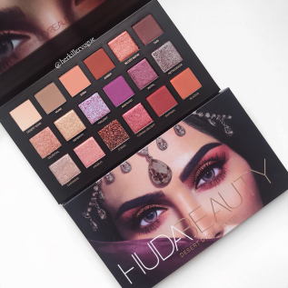
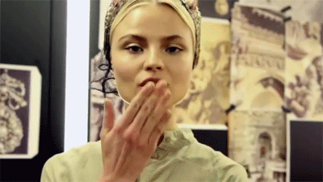
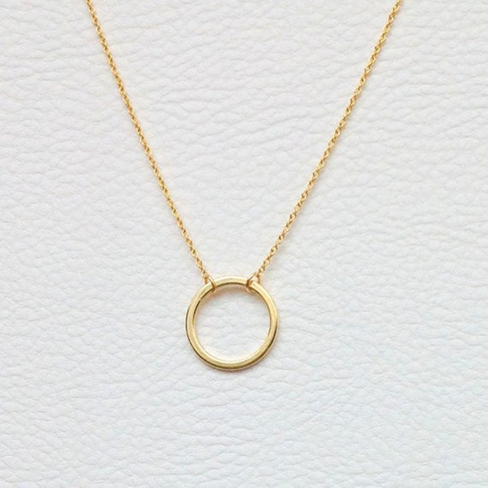

Fashion is expression. It is a collection of different ideas pieced together to create art. There are many different types of art, just as there many different types of fashion. On this website, I will share some of my favorite fall makeup products and clothing pieces, so you can start creating art. Using your different styles of fashion, you can alter or build these makeup looks or clothing pieces into a look you really love. Fashion is a world full of many crazy and cool ideas, so this website only displays MY favorites. Enjoy!
FALL MAKEUP MUST HAVES

FALL FASHION MUST HAVES
HOW TO LOOK CLASSY
My biggest tip to look classy anytime is to not overdo anything. First, remember to not apply cakey foundation and to not overdraw your brows. Dark or light eye shadow looks depend on the person doing the makeup, but try to not to do costume makeup. Sometimes, though, crazy bright colors, like green, can be incorporated into an iconic look. Highlighter, blush, and bronzer should not be applied in heavy amounts as it makes you look sweaty combined with the foundation. These products are meant to emphasize the shape of your cheekbones, so the look should be as natural as possible. Also, MAKE SURE TO BLEND EVERYTHING!
Also, remember to not overdo the jewelry. I am a full supporter of interesting jewelry, but piling your body with bracelets, rings, necklaces, and earrings does not look good. Try to keep the amount of jewelry minimum, but the jewelry itself interesting (different shapes, designs, and crazy colors).
I personally think that interesting pieces are key in creating the outfit of your dreams, but limit yourself to 1 to 2 interesting pieces to draw the attention to those pieces only. If you have crazy everything, it looks like you wore something random.


Click on this image to see a larger image.
Interesting jewelry pieces are amazing to complete an outfit, but sometimes simple jewelry can go with a complex outfit as to not overpower the beauty of the clothing. Simple pieces are elegant and perfect for any season of the year.